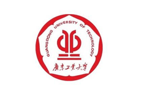
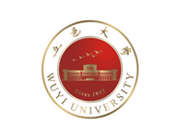
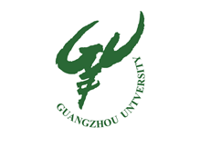
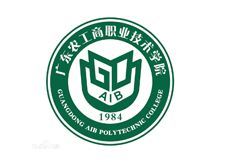
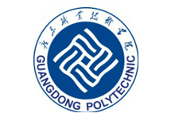
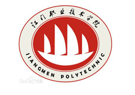
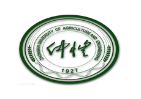
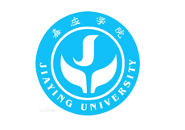
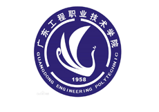
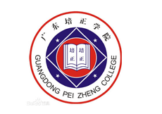

高校合作
University Cooperation
优势互补，共享人才培养成果
自2010年以来，源酷依靠自身在业界良好的口碑和技术实力，先后同广东外语外贸大学，广美学院，五邑
大学，广东工业大学，广州大学，广东轻工职业技术学院，广东工贸职业技术学院，广东农工商职业技术
学院等30多家高校建立了平面广告设计，互联网特效设计，网站建设，软件开发，移动互联网开发等多个
专业方向实习实训合作，帮助高校提升相关专业毕业学生企业实践操作能力，助力大学毕业生高薪就业。
合作项目：
实习实训基地建设；名企储备精英联合培养；高校师资培养；企业项目联合开发；
校企工作室建设；源酷助学金项目；大学生就业创业扶持计划。

- 高校名称：广东松山职业技术学院
- 高校类别：公办大学
- 合作业务：实习实训+名企储备精英联合培养
- 高校介绍：广东松山职业技术学院是2000年6月经广东省人民政府批准转制的省属全日制普通高等职业技术院 校，前身为创办于1976年的韶钢职工大学。学院占地面积43.7万平方米，建筑面积18.6万平方米，教学仪器设 备总值3732.77万元。学院始终秉承“依托韶钢，服务社会”的宗旨，以质量求生存，以特色谋发展的办学理 念，为地方经济培养面向生产、建设、管理、服务第一线的具有良好职业道德、适应能力强的高技能人才；在 科学发展观的指导下，逐步形成极具松山特色，努力打造职业能力训练体系的办学格局。

- 高校名称：广东工业大学
- 高校类别：公办大学
- 合作业务：实习实训+名企储备精英联合培养
- 高校介绍：广东工业大学（Guangdong University of Technology）是一所以工学为主，工、理、经、管、 文、法、艺术多科性协调发展的省属重点大学、广东省“九五”和“十五”期间重点建设的10所省级211--广 东省“211工程”高校和广东高水平大学重点建设高校之一[1] ，是教育部本科教学评估优秀学校，教育部 “卓越工程师教育培养计划“高校。工程学科进入国际ESI排名，位列全球前1%。广东工业大学由原广东工学 院、广东机械学院和华南建设学院（东院）于1995年6月合并组建而成。学校坐落在中国南方名城广州，拥有 广州大学城校区和东风路、龙洞、番禺等多个校区，多校区共占地面积3348亩，校舍建筑159余万平方米。

- 高校名称：五邑大学
- 高校类别：公办大学
- 合作业务：实习实训+名企储备精英联合培养
- 高校介绍：五邑大学地处中国第一侨乡的广东省江门市，是珠江三角洲西岸唯一一所以工科为主的多科性教学 型地方大学。学校1985年建校，1990年成为学士学位授予单位，1993年开始接收外国留学生，1996年成为本 科教学合格单位，1998年成为硕士学位授予单位，2008年本科教学工作水平评估被评为优秀等级。 截止到2014年10月，在籍学生24000多人，其中全日制本科生18000多人，研究生300多人，成人教育学生 5700多人。学校面向全国21个省、自治区、直辖市及港澳招收本科学生，面向全国招收研究生。

- 高校名称：广州大学
- 高校类别：公办大学
- 合作业务：实习实训+名企储备精英联合培养
- 高校介绍：广州大学，简称“广大”，是广东省和广州市重点建设的综合性大学，教育部、财政部“国培计划” 9所实施高校之一，全国首批12所“CDIO工程教育模式改革研究与实践”试点高校，也是“卓越法律人才教育 培养计划”、“卓越工程师教育培养计划”、“千人计划”、“国家级大学生创新创业训练计划”重点建设高 校。学校已发展成为一所拥有哲学、经济学、法学、教育学、文学、历史学、理学、工学、管理学、艺术学等 十大学科门类，在国内外具有一定知名度的综合性研究教学型大学。

- 高校名称：广东农工商职业技术学院
- 高校类别：公办大学
- 合作业务：实习实训+名企储备精英联合培养
- 高校介绍：广东农工商职业技术学院前身为创办于1952年的广东农垦机务学校，1984年开始举办大专学历教育， 2000年转制为职业技术学院。建院以来，学院坚持“以人为本，特色强校，求实创新，和谐发展”的办学理念， “立足农垦，面向广东，服务社会”的办学定位，为各类企事业单位培养了4万多名专业技术人才和经营管理人才 目前有全日制在校生18000余人。2005年接受全国“高职高专院校人才培养工作水平评估”被确认为优秀院校。 2012年被省教育厅确定为广东省示范性高职院校建设项目立项建设单位。

- 高校名称：广东职业技术学院
- 高校类别：公办大学
- 合作业务：实习实训+名企储备精英联合培养
- 高校介绍：广东职业技术学院（英文：Guangdong Vocational and Technical College）是经省人民政府批准、 教育部备案的，以工为主，涵盖文、理、艺术等较全面专业体系的全日制普通高等职业院校。该校创办于1984年 ，于2001年升格为专科层次的广东纺织职业技术学院，2012年更名为广东职业技术学院。根据2014年9月学校 官网显示，该校有佛山禅城和高明两个校区，总占地面积1127亩，设有8个院校，开办专科专业34个，有全日制 在校生13000多人。

- 高校名称：江门职业技术学院
- 高校类别：公办大学
- 合作业务：实习实训+名企储备精英联合培养
- 高校介绍：江门职业技术学院是2004年3月经广东省人民政府批准、国家教育部正式备案成立的公办全日制普通 高等学校，由具有20多年办学历史的原江门教育学院、原江门市工业中专学校和原江门财贸学校组建而成，是江 门市两所高等职业技术院校之一。

- 高校名称：仲恺农业工程学院（白云校区）
- 高校类别：公办大学
- 合作业务：实习实训+名企储备精英联合培养
- 高校介绍：仲恺农业工程学院创办于民国十六年（1927年），是一所以伟大的爱国主义者廖仲恺先生名字命名， 以现代农业科学为特色，以农、工学科为优势，农、工、理、经、管、文、法、艺八大学科协调发展，服务于区 域经济和现代农业的多科性教学研究型、具有硕士学位授予权的省属本科纪念大学，是全国第一批卓越农林人才 教育培养计划高校。

- 高校名称：嘉应学院
- 高校类别：公办大学
- 合作业务：实习实训+名企储备精英联合培养
- 高校介绍：嘉应学院是一所省属普通本科院校，前身是创办于1913年的梅县县立女子师范学校，有100年的办学 历史，位于叶剑英元帅的家乡，中国历史文化名城，客家人的主要聚居地，全国优秀旅游城市，全国十大最具安 全感城市，著名的文化之乡、华侨之乡、足球之乡-广东省梅州市。梅州在清朝时称嘉应州，嘉应学院由此得名

- 高校名称：广东工程职业技术学院
- 高校类别：公办大学
- 合作业务：实习实训+名企储备精英联合培养
- 高校介绍：广东工程职业技术学院是省教育厅直属的一所以工科为主，文、经、管、艺术兼顾的高等职业院校， 其前身是创办于1958年的广东省成人科技大学，至今已有57年的办学历史，先后为社会培养了7万多名专业技术 人才。中国工程院院士刘人怀教授是学校名誉院长。学校坚持以高就业为导向，以高技能为核心，以高素质为灵 魂，政校行企全方位融合，全面服务经济社会发展，大胆改革，勇于创新，积极探索现代产业体系构建背景下高 端技能型人才培养模式，走出了一条超常规发展之路。韩启德、张玉台、邓楠等中国科协领导，朱小丹、陈云贤 等广东省领导先后来校视察，对学校的发展成效给予高度评价。

- 高校名称：广东培正学院
- 高校类别：公办大学
- 合作业务：实习实训+名企储备精英联合培养
- 高校介绍：广东培正学院位于广东省广州市，是管理学、经济学为主，文学、法学、艺术和工学、理学多学科交 融渗透、协调发展的省属全日制民办普通本科高校。 学校创办于1993年，原名民办培正商学院。2005年3月经教育部批准升格为本科层次高校并更为现名；2009年3 月获发《中华人民共和国民办学校办学许可证》，是广东省第一家获得该证的民办高校。 根据2014年9月学校官网显示，该校校园用地1700亩，校舍建筑面积近30万平方米，固定资产达7.2亿元。设有1 3个教学单位，开办25个本科专业。有全日制在校学生13000人。

- 高校名称：广东第二师范学院
- 高校类别：公办大学
- 合作业务：实习实训+名企储备精英联合培养
- 高校介绍：广东第二师范学院（原广东教育学院）创建于1955年，2010年3月，经国家教育部批准，改为广东第 二师范学院，是广东省属的普通本科学校。2014年，获得本科学位授予权。 根据2014年6月学校官网显示，学校位于广东省广州市，设有海珠校区和花都校区，全日制本、专科在校生9854 人，成人在校生4707人，教职员工613 人。